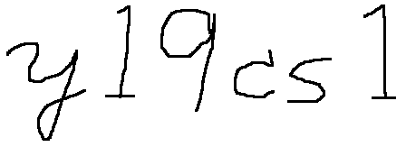

2019年度 3Q コンピュータサイエンス第一 (新山)
クラス 1b(CS1) および クラス 2b(CS1)
- 日時: 月曜日
1-2限 (1b)、
および
3-4限 (2b)
- 場所: S4 演習室1 (3F)、試験のときのみ W641
- 講師: 新山 祐介
- メールアドレス:

@shinyama.jp
注意: メールを送る場合は、
必ず クラス名 (1b/2b) と 学籍番号 を書いてください。
- TAの方々:
- クラス1b: 成井さん、内田さん
- クラス2b: Wangさん、Shuさん
- 成績評価の方法:
- 小課題 (各5点×5 = 25点)、締め切りを過ぎた場合は得点なし。
- 中課題 (20点+15点+20点 = 55点)、締め切りを過ぎた場合は得点なし。
- 期末試験 (35点)。
(101点以上の点数は100点に切り詰めるものとする。)
- 使用プログラミング言語: Python
Python のダウンロード:
https://www.python.org/
自宅で練習したい方へ:
Windows 上で Python を使う方法
昨年度 Ruby を使っていた方へ:
RubyとPythonの違い
授業用スライド
注意: 予定は都合により多少変化することがあります。
授業に関していただいたご意見 (2019/11/18)
- 公平だった。
- 喋るのが速すぎる。
- 出席率を上げたいなら:
- 出席点を与えるべき。
- 授業中に課題のヒントを与える。
- 先生がインスタ映えする格好で授業する。
- その他:
- 課題提出期間を3週間にして。 (ダメです)
- ポケモン ソードシールドが欲しいです。 (先生はサンタじゃありません)
- 「オーライ」が良かった。
(実は "alrighty" と言ってることも多い)
Yusuke Shinyama